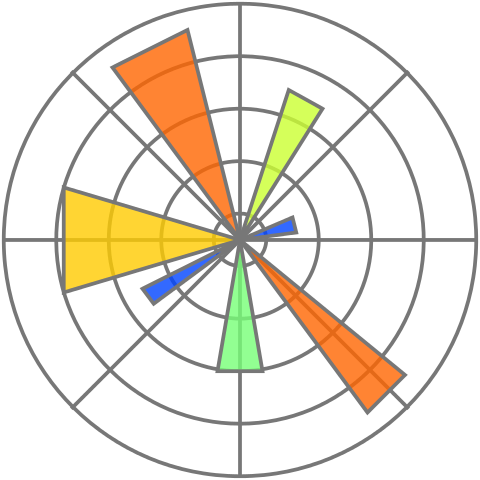

matplotlib gallery

Figure 1
import matplotlib.pyplot as plt
import numpy as np
np.random.seed(1)
x = np.random.randn(1000)
x_mesh = np.linspace(start = -4, stop = 4, num = 100)
y = np.exp(-0.5 * x_mesh ** 2) / np.sqrt(2 * np.pi)
fig = plt.figure()
ax = fig.add_axes([0.1,0.1,0.8,0.8])
ax.hist(x, bins = 20, density=True, color="#67a9cf")
ax.plot(x_mesh, y, color="#ef8a62", linewidth=3)
ax.set_xlabel("X")
ax.set_ylabel("density")
fig.savefig("fig01.png", dpi=300)
Figure 2
import matplotlib.pyplot as plt
import numpy as np
import scipy.stats as stats
np.random.seed(1)
num_points = 50
x = np.random.randn(num_points)
x.sort()
unit_mesh = np.linspace(
start = num_points / (num_points + 1),
stop = 1 / (num_points + 1),
num = num_points)
quantile_vals = stats.norm.isf(unit_mesh)
line_lims = [min(quantile_vals) * 1.1,max(quantile_vals) * 1.1]
fig = plt.figure()
ax = fig.add_axes([0.1,0.1,0.8,0.8])
ax.scatter(quantile_vals, x, color="#67a9cf")
ax.plot(line_lims, line_lims, color="#ef8a62")
ax.set_title("Normal Q-Q plot")
ax.set_xlabel("Theoretical quantiles")
ax.set_ylabel("Sample quantiles")
fig.savefig("fig02.png", dpi=300)
Figure 3
import matplotlib.pyplot as plt
data = {'apple': 10, 'orange': 15, 'lemon': 5}
names = list(data.keys())
values = list(data.values())
fig = plt.figure()
ax = fig.add_axes([0.1,0.1,0.8,0.8])
ax.bar(names,
values,
color = "#cccccc",
edgecolor = "#252525")
fig.savefig("fig03.png", dpi=300)
Figure 4
import numpy as np
import matplotlib.pyplot as plt
x = np.linspace(0, 8, 1000)
y1 = np.sin(x)
y2 = np.cos(x)
fig, ax = plt.subplots()
ax.plot(x, y1, color="#67a9cf", label="sine")
ax.plot(x, y2, color = "#ef8a62", label="cosine")
ax.legend(loc="upper left")
ax.set_title("Lines and Ticks", loc="left")
ax.set_xlabel("x")
ax.set_ylabel("value")
ax.set_xticks([0, 1, 2, 4, 7, 8])
ax.set_ylim([-1.5, 2.5])
ax.set_yticks(np.linspace(-1.5, 1.5, 7))
fig.savefig("fig04.png", dpi=300)
Figure 5
import numpy as np
import matplotlib.pyplot as plt
np.random.seed(4)
fig, axs = plt.subplots(2, 2, figsize=(8, 6), constrained_layout=True)
xs = np.arange(7)
groups = list(zip(["a", "b"], ["#67a9cf", "#ef8a62"]))
for ax, title in zip(axs[0], ["scatter panel 1", "scatter panel 2"]):
for group, color in groups:
ys = np.random.uniform(size=7)
ax.scatter(xs, ys,
edgecolors = color,
facecolors = "none",
label = group)
ax.set_title(title, loc = "left")
ax.set_ylim([0, 1])
ax.set_xlim([-0.5, 6.5])
ax.set_xlabel("shared x")
axs[0, 0].set_ylabel("shared y")
axs[0, 1].legend(loc = "upper right")
line_xs = np.linspace(0, 2 * np.pi, 100)
axs[1, 0].plot(line_xs, np.sin(line_xs), color = "#67a9cf")
axs[1, 0].set_title("line plot")
axs[1, 0].set_xlabel("angle")
axs[1, 0].set_ylabel("sin(x)")
samples = np.random.normal(size=500)
axs[1, 1].hist(samples, bins = 20, color = "#ef8a62", edgecolor = "purple")
axs[1, 1].set_title("histogram", loc="right")
axs[1, 1].set_xlabel("value")
axs[1, 1].set_ylabel("count")
for label, ax in zip(["A", "B", "C", "D"], axs.flat):
ax.text(-0.15, 1.15, label,
transform = ax.transAxes,
fontsize = 14,
fontweight = "bold",
va = "top",
ha = "left")
fig.savefig("fig05.png", dpi=300)
Figure 6
import matplotlib.pyplot as plt
import pandas as pd
iris = pd.read_csv("iris.csv")
unique_species = iris.species.unique()
grouped_sepal_lengths = [iris[iris.species == species].sepal_length
for species in unique_species]
plt.figure()
plt.boxplot(x = grouped_sepal_lengths,
labels = unique_species)
plt.savefig("fig06.png", dpi=300)
Figure 7
import matplotlib.pyplot as plt
import matplotlib as matplotlib
import pandas as pd
iris = pd.read_csv("iris.csv")
numeric_cols = iris.columns.to_list()[0:4]
iris_corrs = iris[numeric_cols].corr().to_numpy()
fig, ax = plt.subplots()
im = ax.imshow(iris_corrs)
cbar = ax.figure.colorbar(im)
cbar.ax.set_ylabel("Correlation")
ax.set_xticks(range(iris_corrs.shape[1]))
ax.set_yticks(range(iris_corrs.shape[0]))
ax.set_xticklabels(numeric_cols)
ax.set_yticklabels(numeric_cols)
ax.tick_params(top=False, bottom=False,
labeltop=True, labelbottom=False)
kw = dict(horizontalalignment="center",
verticalalignment="center",
color="black")
valfmt = matplotlib.ticker.StrMethodFormatter("{x:.1f}")
for i in range(iris_corrs.shape[0]):
for j in range(iris_corrs.shape[1]):
im.axes.text(j, i, valfmt(iris_corrs[i, j], None), **kw)
plt.tick_params(left=False)
plt.savefig("fig07.png", dpi=300)
Figure 8
from Bio import Phylo
from io import StringIO
import matplotlib.pyplot as plt
import numpy as np
def ltt_data(tree):
node_times = []
def traverse(clade, current_time):
bl = clade.branch_length if clade.branch_length else 0
if clade.clades:
node_times.append(('branch', current_time))
for child in clade.clades:
if child.is_terminal():
node_times.append(('tip', current_time + child.branch_length))
else:
traverse(child, current_time + child.branch_length)
traverse(tree.root, 0)
times = []
num_lines = []
curr_ltt = 1
for (node_type, time) in node_times:
times.append(time)
if node_type == 'branch':
curr_ltt += 1
num_lines.append(curr_ltt)
else:
curr_ltt -= 1
num_lines.append(curr_ltt)
return times, num_lines
newick_tree = StringIO("((A:0.1, B:0.2):0.3, (C:0.4, D:0.5):0.6);")
tree = Phylo.read(newick_tree, "newick")
fig, (ax1, ax2) = plt.subplots(2, 1, sharex=True, gridspec_kw={'height_ratios': [3, 2]})
Phylo.draw(tree, do_show = False, axes = ax1)
ax1.yaxis.set_ticks([])
ax1.yaxis.set_ticklabels([])
ax1.set_ylabel('')
ax1.set_xlabel('')
ltt_x, ltt_y = ltt_data(tree)
ax2.plot(ltt_x, ltt_y, 'bo')
ax2.step(ltt_x, ltt_y, 'b-', where='post', label='Sine Wave')
ax2.set_ylabel('Lineage count', color='b')
ax2.set_xlabel('Time (branch length)')
ax2.tick_params(axis='y', labelcolor='b')
plt.subplots_adjust(right=0.85)
fig.savefig("fig08.png", dpi=300)
Figure 9
import pandas as pd
import numpy as np
import matplotlib.pyplot as plt
mtcars = pd.read_csv("mtcars.csv")
plot_df = (
mtcars.groupby("cyl")
.agg(
mean_mpg=("mpg", "mean"),
sd_mpg=("mpg", "std"),
n=("mpg", "size"), # Count the number of occurrences for each group
)
.reset_index()
)
plot_df["lower_mpg"] = plot_df["mean_mpg"] - 1.96 * plot_df["sd_mpg"] / np.sqrt(
plot_df["n"]
)
plot_df["upper_mpg"] = plot_df["mean_mpg"] + 1.96 * plot_df["sd_mpg"] / np.sqrt(
plot_df["n"]
)
fig = plt.figure()
ax = fig.add_axes([0.1, 0.1, 0.8, 0.8])
ax.fill_between(
plot_df["cyl"], plot_df["lower_mpg"], plot_df["upper_mpg"], color="blue", alpha=0.2
)
ax.plot(plot_df["cyl"], plot_df["lower_mpg"], "--", color="blue")
ax.plot(plot_df["cyl"], plot_df["upper_mpg"], "--", color="blue")
ax.plot(plot_df["cyl"], plot_df["mean_mpg"], "-", color="red", label="Mean")
ax.set_xlabel("Number of Cylinders")
ax.set_ylabel("Miles per Gallon (MPG)")
ax.set_xticks(range(4, 9))
ax.set_yticks(range(15, 35, 5))
ax.grid(True, which="major", linestyle="-", linewidth=0.25, color="grey", zorder=0)
# Ensure the grid lines are in the background by setting the z-order of the plots
ax.set_axisbelow(True)
fig.savefig("fig09.png", dpi=300)
Figure 10
import pandas as pd
import numpy as np
import matplotlib.pyplot as plt
mtcars = pd.read_csv("mtcars.csv")
plot_df = mtcars[["mpg", "hp", "wt", "cyl"]]
fig = plt.figure()
ax = fig.add_subplot(111, projection="3d")
scatter = ax.scatter(
plot_df["mpg"],
plot_df["hp"],
plot_df["wt"],
c=plot_df["cyl"],
cmap="viridis",
marker="o",
)
colorbar = fig.colorbar(scatter, ax=ax, fraction=0.025, pad=0.25)
colorbar.set_label("Number of Cylinders")
ax.set_xlabel("Horsepower (HP)")
ax.set_ylabel("Weight (1000 lbs)")
ax.set_zlabel("Miles per Gallon (MPG)")
# For an interactive plot, uncomment the following line.
# plt.show()
fig.savefig("fig10.png", dpi=300)
Figure 11
import numpy as np
import matplotlib.pyplot as plt
np.random.seed(7)
x = np.random.randn(20)
y = np.random.randn(20)
plt.style.use('./aez20250101.mplstyle')
plt.scatter(x, y, zorder=5)
plt.scatter(x, y+0.2, zorder=5)
plt.scatter(x, y+0.4, zorder=5)
plt.title('Title')
plt.xlabel('x-axis')
plt.ylabel('y-axis')
plt.savefig("fig11.png", dpi=300)
## =========================================================
## Author: Alexander E. Zarebski
## Date: 2025-01-01
## =========================================================
##
## Matplotlib configuration are currently divided into
## following parts:
##
## - AXES
## - FONT
## - GRID
##
## =========================================================
## ---------------------------------------------------------
## AXIS
## ---------------------------------------------------------
axes.edgecolor: "#333333"
axes.grid: True
axes.labelcolor: "#333333"
axes.titlecolor: "#333333"
axes.titlesize: 16.0
axes.titleweight: "bold"
axes.titlelocation: "left"
axes.prop_cycle: cycler('color', ['377eb8','e41a1c','4daf4a','984ea3','ff7f00'])
xtick.color: "#4d4d4d"
ytick.color: "#4d4d4d"
## ---------------------------------------------------------
## FONT
## ---------------------------------------------------------
font.family: "sans-serif"
font.size: 14.0
## ---------------------------------------------------------
## GRID
## ---------------------------------------------------------
grid.color: "#ebebeb"
Figure 12
import numpy as np
import matplotlib.pyplot as plt
import squarify
np.random.seed(7)
x = np.sort(np.exp(np.random.normal(2, 1, 10)))
plt.figure()
squarify.plot(sizes=x,
color=10*["#1b9e77"],
label=['A', 'B', 'C', 'D', 'E', 'F', 'G', 'H', 'I', 'J'],
pad=True)
plt.axis("off")
plt.title("Title")
plt.savefig("fig12.png", dpi=300)
Figure 13
import numpy as np
import matplotlib.pyplot as plt
np.random.seed(7)
x = np.linspace(0, 10, 200)
y_left = np.sin(x)
y_right = 100 * np.cos(x)
fig, ax_left = plt.subplots()
ax_left.plot(x, y_left, color="green")
ax_left.set_xlabel("x")
ax_left.set_ylabel("sin(x)", color="green")
ax_left.tick_params(axis="y", colors="green")
left_ticks = [-1.0, -0.5, 0.0, 0.5, 0.6, 0.7, 1.0]
ax_left.set_yticks(left_ticks)
ax_right = ax_left.twinx()
ax_right.plot(x, y_right, color="purple")
ax_right.set_ylabel("100 cos(x)", color="purple")
ax_right.tick_params(axis="y", colors="purple")
# NOTE This is needed to keep the scales displayed!
fig.tight_layout()
# plt.show()
plt.savefig("fig13.png", dpi=300)
Figure 14
from Bio import Phylo
import matplotlib.pyplot as plt
tree = Phylo.read("tree.newick", "newick")
tip_distances = [tree.distance(tree.root, tip) for tip in tree.get_terminals()]
max_tip_distance = max(tip_distances) if tip_distances else 0
halfway = max_tip_distance / 2
label_offset = 0.05
fig, ax = plt.subplots()
Phylo.draw(
tree,
do_show=False,
axes=ax,
label_func=lambda clade: clade.name if clade.is_terminal() else None,
)
ax.axvline(x=halfway, color="red")
ax.axvline(x=max_tip_distance, color="blue")
ax.text(
halfway - label_offset,
0.98,
f"halfway={halfway:.3g}",
color="red",
ha="right",
va="top",
transform=ax.get_xaxis_transform(),
)
ax.text(
max_tip_distance - label_offset,
0.90,
f"last tip={max_tip_distance:.3g}",
color="blue",
ha="right",
va="top",
transform=ax.get_xaxis_transform(),
)
ax.yaxis.set_ticks([])
ax.set_ylabel("")
ax.set_xlabel("Branch length")
fig.savefig("fig14.png", dpi=300)
Figure 15
import numpy as np
import matplotlib.pyplot as plt
np.random.seed(15)
x = np.linspace(0, 10, 25)
baseline = np.exp(0.6 * x)
noise = np.random.lognormal(mean=0, sigma=0.25, size=x.size)
y = baseline * noise
def sqrt_forward(values):
return np.sqrt(values)
def sqrt_inverse(values):
return values ** 2
fig, ax = plt.subplots()
ax.plot(x, y, color="#67a9cf", marker="o")
ax.set_title("Square-root x-scale and logarithmic y-scale", loc="left")
ax.set_xlabel("SQRT SCALE: time", fontsize=14, fontweight="bold")
ax.set_ylabel("LOG SCALE: y values", fontsize=16, fontweight="bold")
ax.set_xlim([0, 10])
ax.set_xscale("function", functions=(sqrt_forward, sqrt_inverse))
ax.set_yscale("log")
fig.savefig("fig15.png", dpi=300)
Figure 16
import matplotlib.pyplot as plt
markers = [
(".", "point"),
("o", "circle"),
("s", "square"),
("^", "triangle up"),
("v", "triangle down"),
("D", "diamond"),
("+", "plus"),
("x", "x"),
]
fig, ax = plt.subplots(figsize=(7, 6))
for row, (marker, name) in enumerate(markers):
y = len(markers) - row
ax.plot(
0,
y,
marker=marker,
markersize=14,
markeredgewidth=2,
color="#67a9cf",
linestyle="none",
)
ax.text(0.4, y, f'"{marker}"', va="center", fontsize=12, family="monospace")
ax.text(0.9, y, name, va="center", fontsize=12)
ax.set_title("Marker codes", loc="left", fontsize=20)
ax.set_xlim([-0.5, 3.5])
ax.set_ylim([0, len(markers) + 1])
ax.axis("off")
fig.savefig("fig16.png", dpi=300)
Figure 17
import pandas as pd
import matplotlib.pyplot as plt
df = pd.read_csv("iris.csv")
species = list(df["species"].unique())
fig, axes = plt.subplots(
nrows=1,
ncols=len(species),
sharex=True,
sharey=True,
figsize=(9, 3.5),
constrained_layout=True,
)
for ax, name in zip(axes, species):
d = df[df["species"] == name]
ax.scatter(
d["petal_length"],
d["petal_width"],
color="#67a9cf",
edgecolor="#252525",
alpha=0.8,
)
ax.set_title(name, loc="left")
axes[1].text(
0.5,
0.5,
"facetting",
transform=axes[1].transAxes,
ha="center",
va="center",
fontsize=28,
fontweight="bold",
color="purple",
)
fig.supxlabel("petal length")
fig.supylabel("petal width")
fig.savefig("fig17.png", dpi=300)
Figure 18
import itertools
import matplotlib.pyplot as plt
from matplotlib.lines import Line2D
import numpy as np
import pandas as pd
np.random.seed(1)
n = 10
levels = ["a", "b", "c"]
df = pd.DataFrame(
[
{"x1": x1, "x2": x2, "x3": x3}
for x1, x2, x3 in itertools.product(levels, levels, [False, True])
for _ in range(n)
]
)
df["y"] = np.random.normal(loc=df["x3"].astype(float), scale=1.0)
df = df[["y", "x1", "x2", "x3"]]
x2_positions = {level: position for position, level in enumerate(levels)}
x2_colors = {"a": "#1b9e77", "b": "#d95f02", "c": "#7570b3"}
x3_markers = {False: "o", True: "^"}
x3_jitter = {False: (0.05, 0.15), True: (-0.15, -0.05)}
x3_legend_label = {False: "x3 is false", True: "x3 is true"}
fig, axes = plt.subplots(
nrows=1,
ncols=len(levels),
sharex=True,
sharey=True,
figsize=(9, 3.5),
constrained_layout=True,
)
for ax, x1 in zip(axes, levels):
d = df[df["x1"] == x1]
for x2, x3 in itertools.product(levels, [False, True]):
group = d[(d["x2"] == x2) & (d["x3"] == x3)]
jitter_low, jitter_high = x3_jitter[x3]
x = x2_positions[x2] + np.random.uniform(jitter_low, jitter_high, len(group))
ax.scatter(
x,
group["y"],
marker=x3_markers[x3],
color=x2_colors[x2],
edgecolor="#252525",
linewidth=0.5,
alpha=0.8,
)
ax.set_title(x1, loc="left")
ax.set_xticks(list(x2_positions.values()), list(x2_positions.keys()))
legend_handles = [
Line2D(
[0],
[0],
marker=x3_markers[x3],
markerfacecolor="none",
markeredgecolor="#252525",
color="none",
linestyle="none",
markersize=7,
label=x3_legend_label[x3],
)
for x3 in [False, True]
]
legend = axes[-1].legend(handles=legend_handles, title="x3", frameon=True)
legend.get_title().set_ha("left")
legend.get_title().set_fontweight("bold")
legend._legend_box.align = "left"
fig.supxlabel("x2", fontweight="bold")
fig.supylabel("y", fontweight="bold")
fig.savefig("fig18.png", dpi=300)
Figure 19
import geopandas as gpd
import matplotlib.pyplot as plt
# A geojson file from the good folks at https://gadm.org/data.html
areas = gpd.read_file("gadm41_AUS_1.json")
mainland_names = [
"AustralianCapitalTerritory",
"NewSouthWales",
"NorthernTerritory",
"Queensland",
"SouthAustralia",
"Tasmania",
"Victoria",
"WesternAustralia",
]
areas = areas[areas["NAME_1"].isin(mainland_names)]
# Macquarie Island is part of Tasmania in the admin-1 file, but it is
# far offshore and stretches the map extent so we will remove it for
# this example.
areas = areas.explode(index_parts=False)
areas = areas[areas.geometry.representative_point().y > -45]
# EPSG:3577 is a projection that is suitable for plotting Australia.
areas = areas.to_crs("EPSG:3577")
states = areas
# We simplify the geometry so it looks cleaner.
states["geometry"] = states.geometry.simplify(
tolerance=2000,
preserve_topology=False,
)
fig, ax = plt.subplots(figsize=(8, 7))
states.plot(
ax=ax,
column="NAME_1",
cmap="Pastel2",
edgecolor="#333333",
linewidth=0.8,
)
ax.set_title("Australian administrative boundaries", loc="left")
ax.text(
0.01,
0.01,
"GADM level 1 boundaries, plotted with GeoPandas",
transform=ax.transAxes,
ha="left",
va="bottom",
fontsize=9,
)
ax.set_axis_off()
fig.tight_layout()
fig.savefig("fig19.png", dpi=300)
Figure 20
import sqlite3
import pandas as pd
import matplotlib.pyplot as plt
import random
con = sqlite3.connect("iris.sqlite")
query = """
SELECT *
FROM iris;
"""
df = pd.read_sql_query(query, con)
con.close()
species = list(df["species"].unique())
fig, axes = plt.subplots(
nrows=1,
ncols=len(species),
sharex=True,
sharey=True,
figsize=(9, 3.5),
constrained_layout=True,
)
for ax, name in zip(axes, species):
d = df[df["species"] == name]
ax.scatter(
d["petal_length"],
d["petal_width"],
color="#67a9cf",
edgecolor="#252525",
alpha=0.8,
)
ax.set_title(name, loc="left")
for n in range(10):
axes[(ix := n % 3)].text(
random.random(),
random.random(),
"SQLite",
transform=axes[ix].transAxes,
rotation=180 * random.random() - 90,
ha="center",
va="center",
fontsize=38,
fontweight="bold",
color="red",
)
fig.supxlabel("petal length")
fig.supylabel("petal width")
fig.savefig("fig20.png", dpi=300)
Figure 21
import pandas as pd
import matplotlib.pyplot as plt
df = pd.read_csv("iris.csv")
measurements = ["sepal_length",
"sepal_width",
"petal_length",
"petal_width"]
species_colours = {
"setosa": "#e41a1c",
"versicolor": "#4daf4a",
"virginica": "#377eb8",
}
# create a dictionary with the limits of the scale for each
# coordinate.
limits = {}
for name in measurements:
values = df[name]
padding = 0.05 * (values.max() - values.min())
limits[name] = (values.min() - padding, values.max() + padding)
# scale the data such that it sits naturally on the new scales.
parallel = df.copy()
for name, (low, high) in limits.items():
parallel[name] = (df[name] - low) / (high - low)
# Plot the actual data!
fig, ax = plt.subplots(figsize=(9, 5))
x = list(range(len(measurements)))
for species, colour in species_colours.items():
species_data = parallel[parallel["species"] == species]
for n, (_, flower) in enumerate(species_data.iterrows()):
ax.plot(
x,
flower[measurements],
color=colour,
alpha=0.35,
linewidth=1.1,
label=species if n == 0 else None,
)
ax.set_xticks(x)
ax.set_xticklabels([name.replace("_", " ") for name in measurements])
ax.set_xlim(x[0], x[-1])
ax.yaxis.set_visible(False)
# Create the scales for each of the coordinates.
for n, name in enumerate(measurements):
axis = ax.twinx()
axis.set_ylim(*limits[name])
axis.spines[["left", "top", "bottom"]].set_visible(False)
axis.spines["right"].set_position(("axes", n / (len(measurements) - 1)))
axis.tick_params(axis="y", length=3, labelsize=8)
axis.grid(False)
ax.legend(
title="species",
frameon=True,
facecolor="white",
framealpha=1,
loc="upper right",
ncols=1,
)
fig.tight_layout()
fig.savefig("fig21.png", dpi=300)